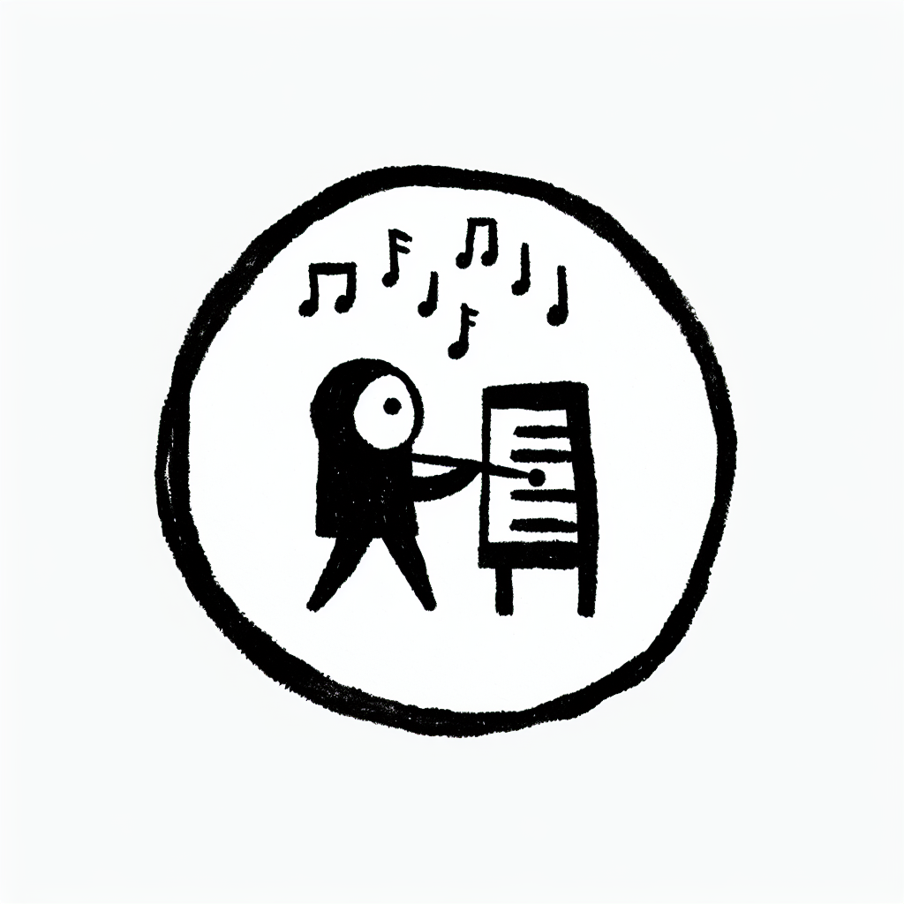

L'importance de la lenteur : comprendre le Tempo 4
L'importance de la lenteur : comprendre le Tempo 4
Qui a dit que l'entraînement devait être rapide pour être efficace ? À l'ère du fitness express, le Studio Lagree d'Anglet rappelle que la lenteur a beaucoup à offrir. Situé au sein de l'espace hybride DOZ, ce studio unique en son genre invite à redécouvrir le potentiel du Tempo 4, une méthode de renforcement musculaire où chaque seconde compte. Dans cet article, nous allons explorer pourquoi adopter cette rythmique précise peut transformer votre approche de l'exercice physique.
Qu'est-ce que le Tempo 4 ?
Le Tempo 4, c'est le clin d'œil du Studio Lagree à une exécution intentionnelle et méthodique des mouvements. Mais que signifie vraiment ce terme ?
- 4 secondes pour descendre : ralentir l'excentrique et sentir le brûlement musculaire.
- 0 seconde de pause en bas : maintenir une tension continue sur les muscles.
- 1 seconde pour remonter : remonter avec contrôle et précision.
- 0 seconde de pause en haut : recommencer directement pour garder le rythme.
Le concept peut sembler simple : lent et précis. Mais en réalité, il implique une attention accrue à la respiration, la position et l'engagement musculaire.
Pourquoi la lenteur est-elle bénéfique ?
Dans le tourbillon trépidant de la vie moderne, pourquoi choisir de ralentir pendant une séance d'entraînement ? Voici quelques raisons convaincantes :
- Recrutement musculaire maximal : chaque seconde prolongée dans la contraction permet d'activer plus de fibres musculaires.
- Prévention des blessures : avec une attention accrue à la forme et au contrôle, on diminue le risque de mouvements brusques entraînant des blessures.
- Amélioration de la conscience corporelle : ralentir aide à mieux comprendre les mouvements et les sensations de son corps. 🌿
Le Tempo 4 facilite une connexion corps-esprit plus profonde, raison pour laquelle le Studio Lagree le privilégie tant.
Le Lagree et sa philosophie : quand lenteur rime avec intensité
Le mariage du Tempo 4 avec les machines MegaPro du Studio Lagree crée une harmonie unique. Ces équipements très prisés permettent une amplitude de mouvements impeccable, essentielle pour exécuter chaque phase du Tempo 4 avec précision.
Grâce à cette méthode :
- Les muscles sont sollicités sur toute leur amplitude : favorisant ainsi un développement musculaire harmonieux.
- Les séances sont intenses mais respectueuses du corps : pas de chocs brusques sur les articulations.
Cette approche reflète bien la philosophie 'Instant Brut' de DOZ : associant défi et sérénité, effort et réconfort.
Comment le Coffee Shop de DOZ complète-t-il cette expérience ?
Chaque session de Lagree à Anglet est une promesse d'effort suivi d'un réconfort bien mérité. Et quoi de mieux que de déguster un café de spécialité ou un plat sain et local pour revigorer le corps après l'entraînement ?
Le Coffee Shop de DOZ, avec ses options de menu adaptées aux besoins nutritionnels des sportifs, devient le complément idéal du Studio Lagree :
- Des plats concoctés avec des ingrédients frais et de saison, pour soutenir votre effort.
- Un café torréfié avec passion, parfait pour se détendre après une séance intense.
Ce double espace encourage une approche holistique du bien-être, ancrée dans la culture dynamique et décontractée de la côte basque.
La magie de l'instant présent
À l'instar du rythme des vagues que les surfeurs d'Anglet connaissent bien, le Tempo 4 est une invitation à vivre chaque instant pleinement. Cette méthode rappelle que dépasser ses limites ne signifie pas nécessairement aller plus vite, mais plutôt être conscient, présent et engagé dans chaque mouvement.
Nous vous encourageons à explorer le potentiel du Tempo 4 chez DOZ. Réservez dès aujourd'hui votre cours au Studio Lagree et découvrez par vous-même comment la lenteur peut conduire à des résultats exceptionnels. Et après l'effort, laissez-vous tenter par un moment de détente dans notre Coffee Shop. Vous méritez ce petit plaisir !
À bientôt chez DOZ pour une expérience unique où chaque seconde compte.